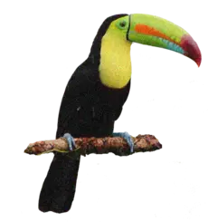
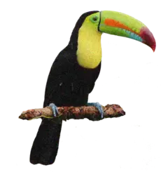
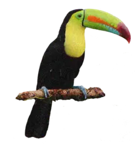
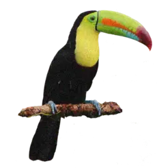

Rainforests
 



According to analysis of satellite data, tropical forests are being destroyed at a rate of at least 8 million hectares or 31,000 square miles a year. That's an area the size of the state of South Carolina or the Czech Republic that is chopping down every year. Brazil, Indonesia, the Democratic Republic of Congo, and Malaysia had the highest rates of rainforest loss between 2012 and 2014 according to research by Matt Hansen of the University of Maryland. Virtually all deforestation is driven by human activity. The biggest drivers of deforestation are agriculture — both industrial and subsistence — and cattle ranching. Much of this production is not consumed locally — instead it is sent to cities or overseas. That means consumers who may live far away from rainforests are usually at least partly responsible for the destruction of these beautiful and important landscapes. In 2021 deforestation topped 13,000 square kilometers for the first time since 2006.

If we want to tackle deforestation we also need to know what causes it. That allows us to avoid the foods that drive deforestation or innovate the ways we produce them.In the chart here we see the breakdown of tropical deforestation by the types of agricultural productionBeef stands out immediately. The expansion of pasture land to raise cattle was responsible for 41% of tropical deforestation. That’s 2.1 million hectares every year – about half the size of the Netherlands. Most of this converted land came from Brazil; its expansion of beef production accounts for one-quarter (24%) of tropical deforestation. This also means that most (72%) deforestation in Brazil is driven by cattle ranching.5 Cattle in other parts of Latin America – such as Argentina and Paraguay – also accounted for a large amount of deforestation – 11% of the total. Most deforestation for beef therefore occurs in Latin America, with another 4% happening in Africa.